Química orgánica
Estructura, mecanismos de reacción, familias de compuestos, síntesis y espectroscopía orgánica.
Estructura y estereoquímica

Estereoquímica R/S (CIP) 3D
Prioridades Cahn–Ingold–Prelog, asignación R/S mirando desde el lado opuesto al grupo de menor prioridad, enantiómeros en espejo y desafío de configuración.
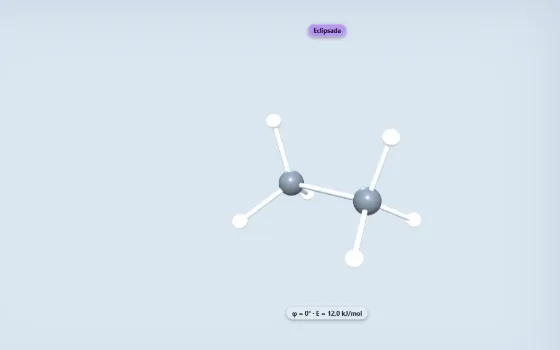
Conformaciones: etano, butano y ciclohexano 3D
Proyecciones de Newman con energía torsional, conformaciones anti/gauche/eclipsada, silla del ciclohexano con inversión, valores A y repulsión 1,3-diaxial.

Carbohidratos: Fischer → Haworth → silla
De la proyección de Fischer a la de Haworth: piranosas y furanosas de aldosas y cetosas, carbono anomérico (α/β), conformación silla o sobre y repulsiones 1,3-diaxiales, con lección guiada y desafío.
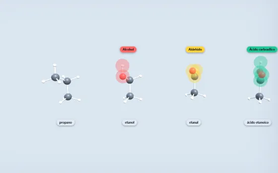
Grupos funcionales 3D
Veinte moléculas con quince grupos funcionales resaltados, bandas IR características, prioridad de nomenclatura y desafío de identificación.
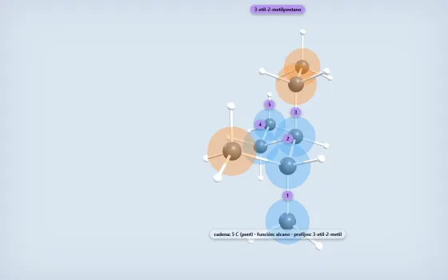
Nomenclatura IUPAC orgánica
Simulador 3D para aprender y practicar la nomenclatura IUPAC orgánica: cadena principal, numeración y localizadores, sustituyentes en orden alfabético y prioridad de grupos funcionales, con moléculas en 3D y modo de práctica.
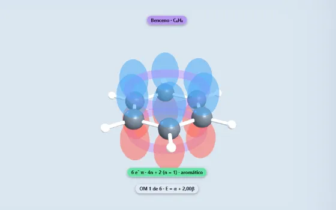
Aromaticidad y regla de Hückel
Simulador 3D de aromaticidad: regla 4n + 2 de Hückel, orbitales moleculares π y círculo de Frost, antiaromaticidad, iones aromáticos y heterociclos (pirrol, piridina, furano).
Mecanismos y reactividad
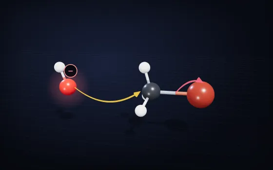
Mecanismos SN1 · SN2 · E1 · E2
Geometrías 3D, flechas de movimiento de electrones, orbitales, perfiles de energía y un predictor de mecanismo según sustrato, nucleófilo/base y disolvente.
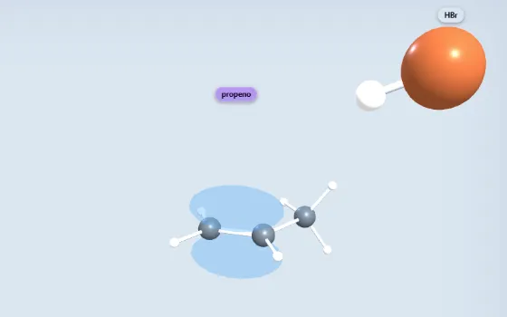
Adición electrofílica y SEAr 3D
Adición de HBr, HCl, H₂O y Br₂ a alquenos (Markovnikov, carbocatión, ion bromonio) y sustitución electrofílica aromática con complejo σ y efecto de sustituyentes (o/m/p).
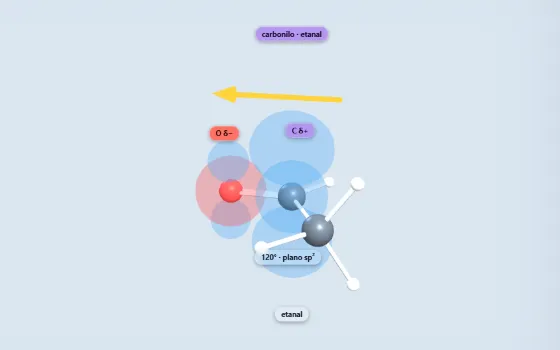
Adición nucleófila al carbonilo 3D
Aldehídos y cetonas frente a distintos nucleófilos: ángulo de Bürgi–Dunitz, intermediario tetraédrico, hemiacetal/acetal y sustitución nucleofílica acílica.

Acidez orgánica y pKa
Simulador 3D de acidez orgánica: pKa, estabilidad de la base conjugada, hibridación, electronegatividad, resonancia y efecto inductivo, con equilibrio ácido–base y ionización según el pH.

Radicales y halogenación en cadena
Simulador 3D de la halogenación radicalaria de alcanos: estabilidad de radicales, iniciación, propagación y terminación, selectividad cloración frente a bromación (postulado de Hammond) y reparto de productos del propano.
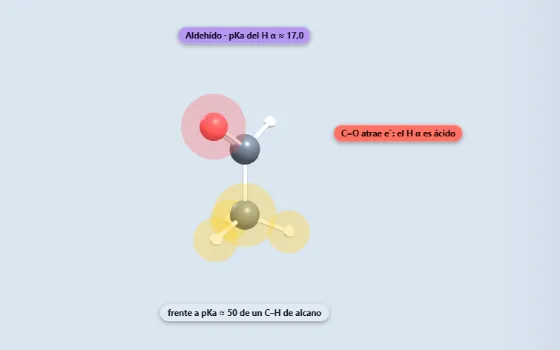
Enolatos y condensación aldólica
Simulador 3D de enolatos y reacción aldólica: acidez del hidrógeno α, resonancia del enolato, adición aldólica, deshidratación E1cB y condensación cruzada de Claisen–Schmidt, con flechas de electrones.
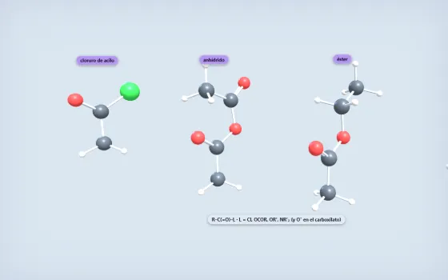
Ácidos carboxílicos y derivados
Simulador 3D de derivados de ácidos carboxílicos: reactividad (cloruro, anhídrido, éster, amida), resonancia, sustitución nucleófila acílica por adición–eliminación, hidrólisis e interconversión.

Reacción de Diels–Alder
Simulador 3D de la reacción de Diels–Alder [4+2]: conformación s-cis del dieno, mecanismo concertado, orbitales frontera, efecto de sustituyentes, regla endo y termodinámica (ΔG frente a T).
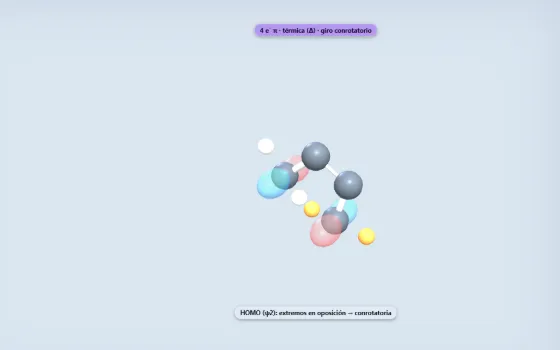
Reacciones electrocíclicas y sigmatrópicas
Reacciones pericíclicas más allá de Diels–Alder: electrociclaciones de 4, 6 y 8 electrones (conrotatoria y disrotatoria), orbitales frontera, control térmico y fotoquímico, desplazamientos [1,5] de H y transposición de Cope [3,3] con reglas de Woodward–Hoffmann.
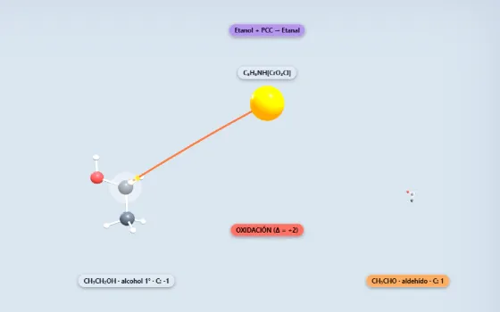
Oxidación y reducción en química orgánica
Simulador 3D de oxidación y reducción orgánica: estados de oxidación del carbono, oxidación de alcoholes primarios, secundarios y terciarios con PCC y Jones, reducción de carbonilos con NaBH₄ y LiAlH₄, mecanismo del hidruro y selectividad de los reactivos.
Familias de compuestos
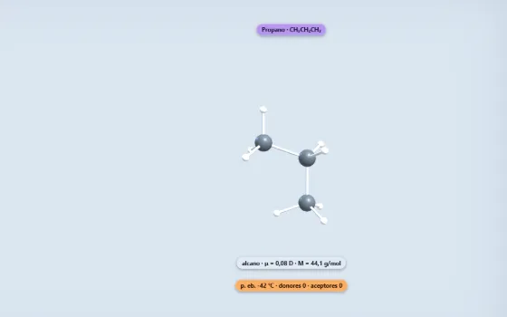
Alcoholes, éteres y aminas
Simulador 3D de alcoholes, éteres y aminas: polaridad, puentes de hidrógeno (dímeros), puntos de ebullición, solubilidad en agua según la cadena, basicidad de las aminas (pKaH) y reactividad comparada.
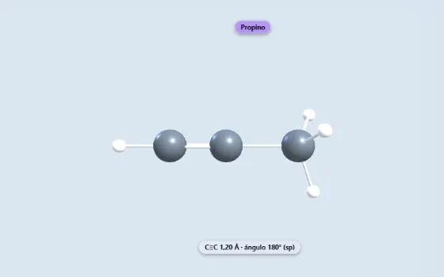
Alquinos: estructura y reacciones
Geometría lineal sp, acidez del alquino terminal y acetiluros, hidrogenación selectiva (Lindlar cis, Na/NH₃ trans, H₂/Pd alcano), hidratación a cetonas o aldehídos y adición de HBr con regioquímica, con sustrato y producto en 3D.
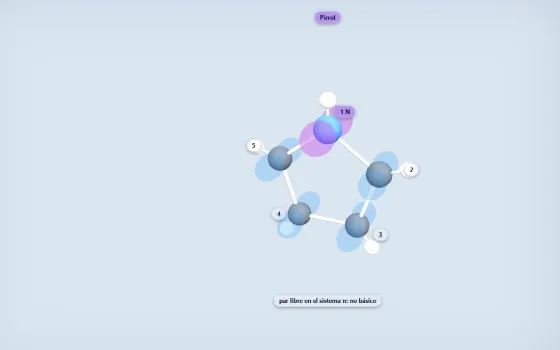
Heterociclos aromáticos
Pirrol, furano, tiofeno, piridina, imidazol y pirimidina en 3D: par libre en el sistema π o en el plano, basicidad (pKa del ácido conjugado), reactividad y regioselectividad frente a electrófilos y presencia en biomoléculas.
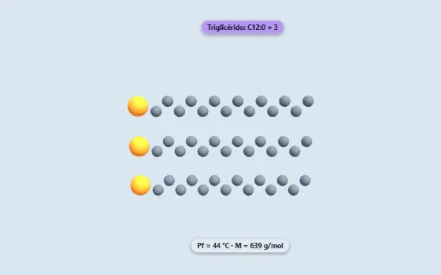
Lípidos, saponificación y jabones
Triglicéridos con ácidos grasos saturados e insaturados (punto de fusión), saponificación con NaOH y cálculo del índice de saponificación, micelas que emulsionan la grasa y efecto del agua dura sobre el jabón.
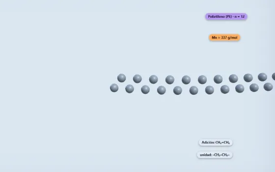
Polímeros: adición y condensación
Cadenas de polietileno, polipropileno, poliestireno, PVC, nailon 6,6 y PET en 3D: polimerización por adición (inicio, propagación, terminación) y por condensación, grado de polimerización, ecuación de Carothers, masa molar promedio y dispersidad.

Terpenos y esteroides
Regla del isopreno en 3D: monoterpenos, sesquiterpenos y diterpenos lineales con sus unidades C₅, ciclación del escualeno y esqueleto esteroidal (anillos A–D, numeración) con colesterol, testosterona, estradiol y progesterona.
Síntesis
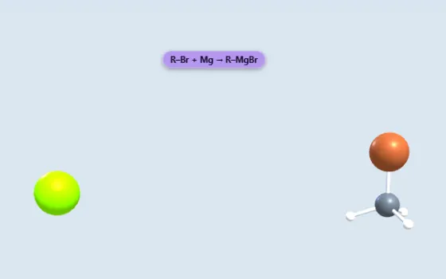
Reactivos de Grignard y organometálicos
Simulador 3D de reactivos de Grignard: formación de RMgX, inversión de polaridad del carbono, adición a aldehídos, cetonas, CO₂ y ésteres, incompatibilidad con protones ácidos y comparación con organolitios y cupratos.

Retrosíntesis y síntesis multipaso
Análisis retrosintético en 3D: desconexión de enlaces C–C, sintones y equivalentes sintéticos (Grignard), interconversión de grupos funcionales y rendimiento global en síntesis lineales y convergentes.
Espectroscopía

Espectroscopía IR y RMN ¹H 3D
Vibraciones animadas de enlaces y bandas IR, desplazamiento químico, integración y multiplicidad (regla n+1) con espectros asignados a átomos de la molécula.

Espectrometría de masas y RMN de 13C
Simulador 3D de espectrometría de masas (ion molecular, patrón isotópico del Cl y Br, rotura α, McLafferty) y de RMN de 13C (carbonos no equivalentes, desplazamiento químico) para resolver estructuras orgánicas.

Espectroscopía UV-Vis y conjugación
Transición π → π* en polienos: efecto de la conjugación sobre el gap HOMO–LUMO y la longitud de onda máxima, sustituyentes alquilo, color complementario de la disolución, espectro de absorción y ley de Beer–Lambert, desde el eteno hasta el β-caroteno.
Química general
Estructura atómica, enlace, estados de la materia, reacciones, equilibrio, termodinámica y electroquímica. Cada simulación es independiente.
Estructura atómica y enlace

AtomLab: modelos atómicos
Modelos atómicos en 3D de Dalton a Schrödinger, orbitales s, p y d con nodos y fase, y los experimentos de Millikan, Davisson–Germer y el espectro del hidrógeno.
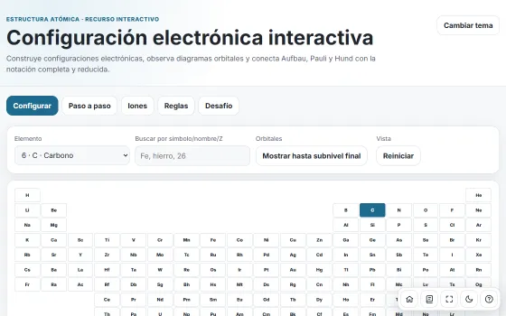
Configuración electrónica
Orbitales, notación completa y reducida, diagramas de orbitales e iones.

Propiedades periódicas
Siete propiedades con datos de referencia (Pauling, ionización, afinidad, radios) y gráfico interactivo para comparar tendencias.

LewisLab: estructuras de Lewis
Cargas formales en vivo, polaridad de enlaces, resonancia, excepciones al octeto y enlace directo a GeoMol.
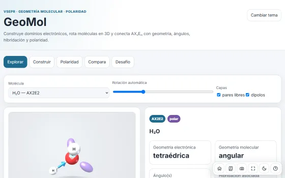
GeoMol: geometría molecular
VSEPR en 3D, ángulos, polaridad y dipolo neto vectorial, con modo práctica y exportación.
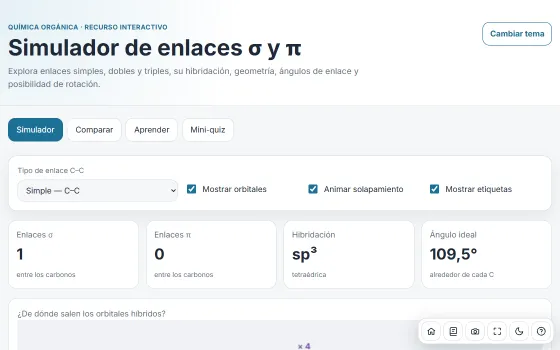
Enlaces sigma y pi
Hibridación y enlaces simples, dobles y triples en 3D; benceno con π deslocalizado.
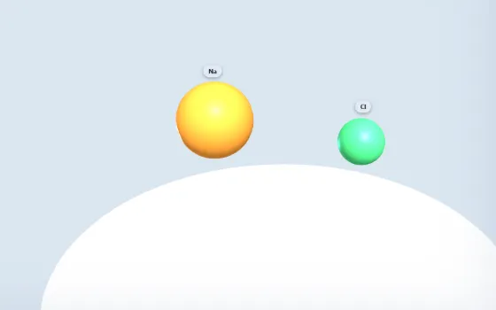
Enlace químico 3D
Enlace iónico (NaCl, LiF, KBr, MgO), covalente (apolar y polar) y metálico (mar de electrones): transferencia, solapamiento, red cristalina, curvas de energía y predictor por ΔEN.
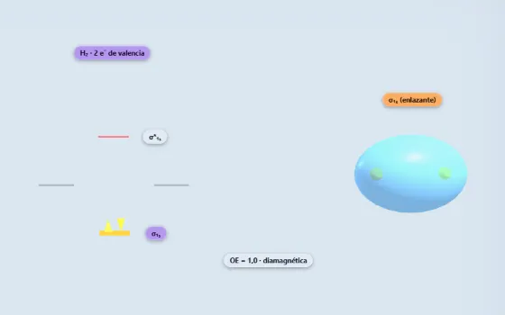
Orbitales moleculares en diatómicas
Simulador 3D de la teoría de orbitales moleculares (LCAO) en moléculas diatómicas homonucleares del periodo 1 y 2: diagramas de energía, orden de enlace, paramagnetismo y forma de los orbitales σ, σ*, π y π*.
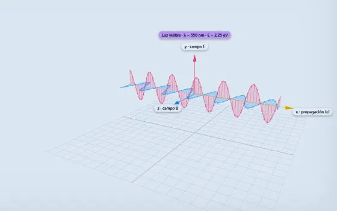
Radiación electromagnética 3D
Onda E–B en 3D, polarización lineal y circular, vector de Poynting, fotón como paquete de ondas y espectro completo de radio a rayos γ con E = hf y efectos sobre la materia.

Transiciones electrónicas y átomo de Bohr 3D
Niveles de H, He⁺ y Li²⁺, absorción y emisión de fotones, series de Lyman, Balmer y Paschen, ondas de de Broglie, ionización y espectro de líneas.

Radiactividad y química nuclear
Simulador 3D de radiactividad: núcleo y notación, banda de estabilidad N/Z, desintegración alfa, beta y captura electrónica, vida media, actividad y datación con carbono-14.
Estados de la materia y fuerzas
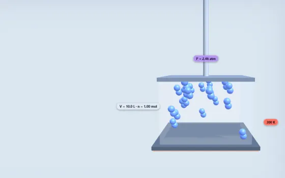
Gases ideales y reales 3D
Recipiente con partículas: leyes de Boyle, Charles, Gay-Lussac y Avogadro, mezcla de gases (Dalton), distribución de Maxwell–Boltzmann y desviaciones de van der Waals.
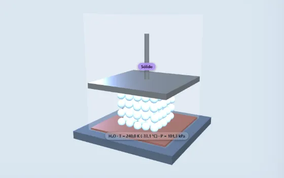
Diagramas de fase 3D
Diagramas P–T de agua y CO₂: fases, curvas de equilibrio, punto triple y crítico, fluido supercrítico, curva de calentamiento y Clausius–Clapeyron.

Interacciones intermoleculares 3D
38 pares de especies: London, ion–ion, ion–dipolo, dipolo–dipolo, cuadrupolo, puente de H y enlace de halógeno, con curva U(r), promedio térmico y comparador de energías.

Sólidos cristalinos y celdas unitarias
Simulador 3D de sólidos cristalinos: celdas cúbicas simple, centrada en el cuerpo y centrada en las caras, empaquetamiento compacto hcp y ccp, estructuras iónicas (NaCl, CsCl, ZnS, CaF₂), átomos por celda, número de coordinación, fracción de empaquetamiento y densidad.
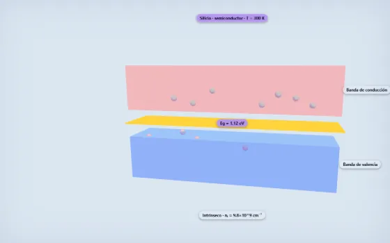
Semiconductores y teoría de bandas
Teoría de bandas en 3D: metales, aislantes y semiconductores según el ancho de la banda prohibida, población térmica de electrones, dopaje tipo n y p, unión p–n y color de un LED a partir de la energía de gap.
Reacciones y estequiometría

El mol y la masa molar
Masa molar a partir de la tabla periódica, número de Avogadro, conversiones entre gramos, moles y partículas, volumen molar de gases en CNTP y composición porcentual, con moléculas y montones de partículas en 3D.

Estequiometría y reactivo limitante 3D
Reacciones balanceadas por tandas de moléculas: reactivo limitante y en exceso, producto teórico, sobrante, conservación de la masa, calculadora en gramos con % de rendimiento y desafío.

Balanceo redox: método ion-electrón
Balancea reacciones redox en medio ácido y básico paso a paso: números de oxidación, semirreacciones, balance de O, H y carga con electrones, y suma final, con el flujo de electrones en 3D.
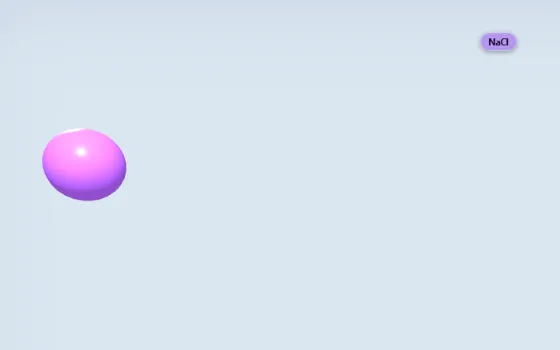
Nomenclatura inorgánica
Fórmulas y nombres de compuestos iónicos en 3D: balance de cargas, nomenclatura Stock, sistemática y tradicional, oxoaniones de los halógenos, ácidos y oxoácidos, con ensamblado de iones.
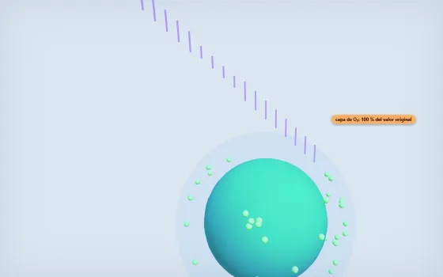
Química ambiental y química verde
Capa de ozono y CFC, efecto invernadero (forzamiento radiativo del CO₂), lluvia ácida y química verde en 3D: economía atómica, factor E y doce principios con comparación de rutas sintéticas.
Disoluciones y equilibrio

Disoluciones y propiedades coligativas 3D
Ley de Raoult, descenso de la presión de vapor, ascenso ebulloscópico, descenso crioscópico y presión osmótica con factor de van 't Hoff, en vasos y membrana semipermeable.

Equilibrio químico y Le Châtelier 3D
Recipiente con émbolo y moléculas: cociente Q frente a K, perturbaciones por concentración, volumen, temperatura (van 't Hoff), catalizador y gas inerte, con tabla ICE, gráficos y desafío.
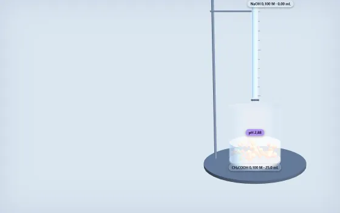
Ácido–base, pH y titulación 3D
Bureta y vaso con indicador: ácidos y bases fuertes, débiles y poliprótico (H₃PO₄), curva de titulación, zona tampón (Henderson–Hasselbalch), distribución de especies, punto de equivalencia y elección del indicador.

Solubilidad y producto de solubilidad (Kps)
Simulador 3D de solubilidad de sales poco solubles: Kps, solubilidad molar, efecto del ion común, efecto del pH, cociente Q frente a Kps y precipitación selectiva (AgI/AgCl).
Termodinámica y cinética
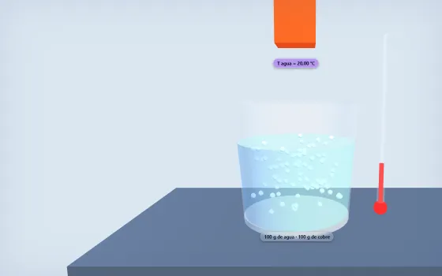
Termoquímica y calorimetría 3D
Calorímetro, calor específico, entalpía de reacción, ley de Hess y entalpías de formación con diagramas de niveles de energía.

Entropía y energía libre de Gibbs
Simulador 3D de entropía y energía libre de Gibbs: microestados y S = k·ln W, expansión espontánea, entropía de los estados de agregación, ΔG = ΔH − TΔS, temperatura de equilibrio y relación con K.

Colisiones y estado de transición 3D
Teoría de las colisiones (energía, orientación, temperatura, catalizador) y estado de transición con diagrama de coordenada de reacción, postulado de Hammond y gráfico de Arrhenius.

Cinética: órdenes de reacción 3D
Leyes de velocidad integradas de orden 0, 1 y 2, vida media, linealización ([A], ln[A], 1/[A]) y experimento misterioso para determinar el orden por velocidades iniciales.
Electroquímica

Electrólisis del agua 3D
Celda electrolítica con control de voltaje y electrolito, semirreacciones en cátodo y ánodo, y vista molecular del proceso.

Pilas galvánicas y ecuación de Nernst 3D
Celdas con puente salino y voltímetro: potenciales estándar, E°celda, ecuación de Nernst, Q frente a K, ΔG° = −nFE° y masa transferida al descargar la pila.
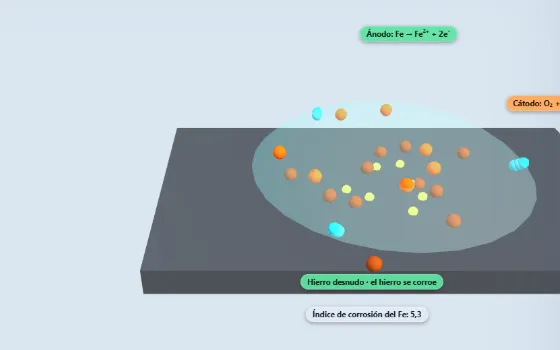
Corrosión y protección del hierro
Corrosión del hierro como pila galvánica en una gota de agua: zona anódica y catódica, efecto de la sal, el oxígeno y el pH, recubrimientos de Zn, Sn y Cu, ánodo de sacrificio de Mg y comparación de pilas comerciales.
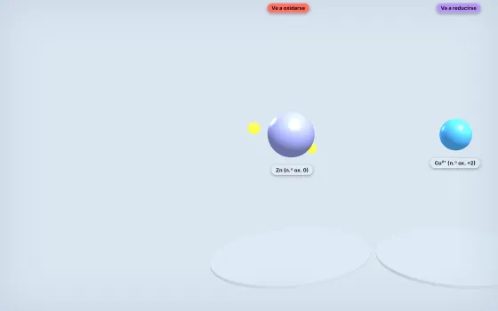
Oxidación y reducción: transferencia de electrones
Simulador 3D que explica qué es oxidarse y reducirse: electrones que pasan del reductor al oxidante, cambio del número de oxidación, tamaño de cationes y aniones, semirreacciones y agentes oxidante y reductor en seis reacciones.
Química inorgánica
Compuestos de coordinación, organometálica, bioinorgánica, simetría y reactividad.
Fundamentos

Química descriptiva de los grupos
Tendencias y reactividad de alcalinos, alcalinotérreos, halógenos y gases nobles, y carácter ácido–base de los óxidos del periodo 3 en 3D: radio, energía de ionización, reacción con agua y estados de la materia.

Ácidos y bases duros y blandos (HSAB)
Clasificación de cationes y bases como duros, frontera o blandos según carga, radio y polarizabilidad; puntaje cualitativo de estabilidad de pares, predicción del sentido de reacciones de intercambio y ejemplos de minerales (Al₂O₃, HgS, Cu₂S).
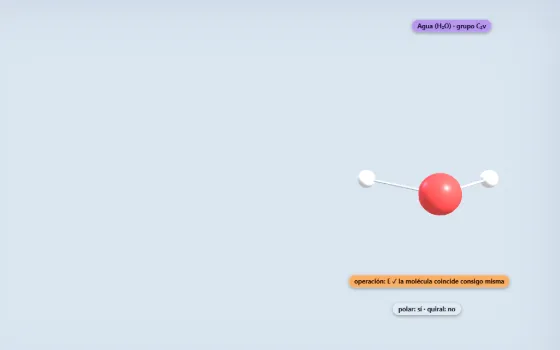
Simetría molecular y grupos puntuales
Elementos y operaciones de simetría (E, Cn, σ, i, Sn) aplicados en 3D a H₂O, NH₃, CH₄, BF₃, SF₆, CO₂, HCl, trans-dicloroeteno, benceno y una molécula quiral; asignación del grupo puntual con diagrama de decisión y relación con polaridad y quiralidad.
Compuestos de coordinación

Isomería · Laboratorio 3D
Misma fórmula, distinta estructura: isómeros cis/trans y fac/mer en modelos 3D, y el argumento de Werner para deducir la geometría contando isómeros.

Quiralidad Δ / Λ en complejos
Origen de la quiralidad en complejos de coordinación y distinción entre las configuraciones Δ y Λ en modelos 3D.

Teoría del campo cristalino 3D
Desdoblamiento d en campos octaédrico, tetraédrico y plano-cuadrado, serie espectroquímica, alto/bajo espín, EECC y color del complejo a partir de Δ.

Nomenclatura y fórmulas de complejos
Simulador 3D para nombrar y formular compuestos de coordinación: átomo central, ligandos monodentados y quelatos, índice de coordinación, geometría, carga y número de oxidación, orden alfabético, prefijos, complejos aniónicos (-ato) y sales.

Orbitales moleculares en complejos octaédricos
Simulador 3D de la teoría de orbitales moleculares en complejos octaédricos ML6: enlace σ, orbitales a1g, t1u, eg y t2g, desdoblamiento Δo, efecto π (donor y aceptor), serie espectroquímica, alto y bajo espín, magnetismo y color.
Organometálica y bioinorgánica

Organometálica: regla de 18 electrones
Simulador 3D de química organometálica: regla de los 18 electrones, conteo de electrones por el método neutro, carbonilos metálicos, ferroceno, complejos planos de 16 electrones y ciclo catalítico de Wilkinson (adición oxidante, coordinación, inserción migratoria y eliminación reductora).
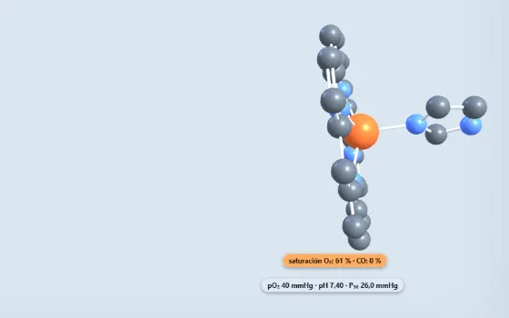
Química bioinorgánica: metales en la vida
Sitio activo del grupo hemo con Fe²⁺, histidina, O₂ y CO; cooperatividad (Hill), efecto Bohr y envenenamiento por CO; Zn en la anhidrasa carbónica, Mg en la clorofila, Cu en la azurina y Fe en el citocromo c; toxicidad de Pb²⁺, Hg y Cd y quelación.
Biología
Biología celular y molecular: biomoléculas, célula, metabolismo, genética y señalización.
Biomoléculas

Aminoácidos y estructura de proteínas 3D
Aminoácidos con carga según pH y pI, enlace peptídico, mapa de Ramachandran por impedimento estérico, hélice α y lámina β con puentes de hidrógeno.

ADN: estructura, replicación y transcripción 3D
Doble hélice B-DNA con pares de bases, horquilla de replicación, transcripción y traducción con tabla de codones.

Lípidos y membrana celular 3D
Fosfolípidos, bicapa fluida, efecto de temperatura y colesterol, transporte pasivo y activo con canales, GLUT y bomba Na⁺/K⁺.
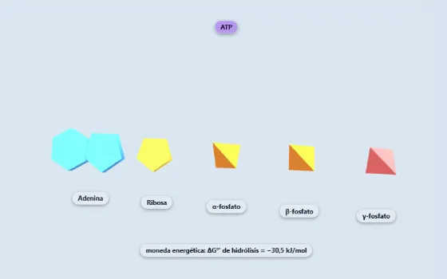
Nucleótidos y coenzimas
ATP, NAD⁺/NADH, FAD/FADH₂ y coenzima A en 3D: estructura modular (base, ribosa, fosfatos), vitaminas precursoras, hidrólisis del ATP, transferencia de hidruro y energía acoplada.
La célula
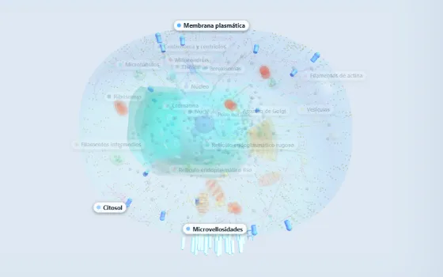
Célula animal 3D
Núcleo, retículos, Golgi, mitocondrias, lisosomas, centrosoma y citoesqueleto en un modelo 3D con corte, etiquetas, funciones por sistema y desafío.

Célula vegetal 3D
Pared celular, vacuola central, cloroplastos, plasmodesmos y el resto de los orgánulos, con fotosíntesis animada y comparación con la célula animal.

Mitosis y meiosis
Simulador 3D de la división celular: ciclo celular e interfase, fases de la mitosis, meiosis I y II, sinapsis y entrecruzamiento, segregación independiente de cromosomas homólogos, contenido de ADN por célula y comparación de ambos procesos.
Enzimas y metabolismo

Enzimas y cinética enzimática 3D
Llave–cerradura y ajuste inducido, ciclo catalítico, Michaelis–Menten con población de enzimas, inhibición competitiva y no competitiva, Lineweaver–Burk, pH y temperatura.
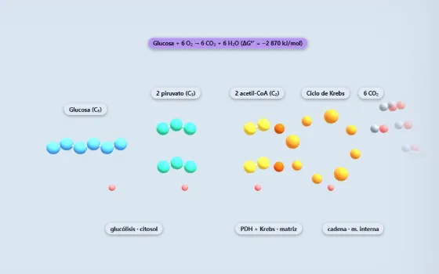
Metabolismo energético 3D
Glucólisis, ciclo de Krebs, cadena respiratoria y ATP sintasa, balance aerobio frente a fermentación e inhibidores (rotenona, cianuro, oligomicina, DNP).

Fotosíntesis: reacciones luminosas y ciclo de Calvin
Simulador 3D de la fotosíntesis: estructura del cloroplasto, absorción de luz, fotólisis del agua, cadena de transporte de electrones, gradiente de H⁺ y ATP sintasa, producción de NADPH y ciclo de Calvin con fijación de CO₂, reducción y regeneración.
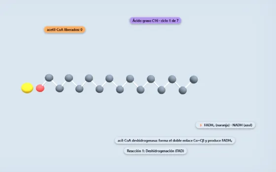
Metabolismo de lípidos y aminoácidos
β-oxidación de ácidos grasos en 3D (cuatro reacciones por ciclo, FADH₂, NADH y acetil-CoA), balance de ATP según la longitud de la cadena, transporte por carnitina, transaminación con PLP, ciclo de la urea y destino del esqueleto carbonado.
Genética y expresión génica
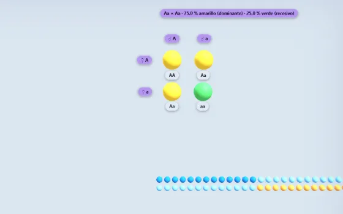
Genética mendeliana y Hardy–Weinberg
Cuadros de Punnett monohíbrido y dihíbrido con proporciones fenotípicas, prueba de χ² frente a una muestra simulada de descendientes, y equilibrio de Hardy–Weinberg con selección contra el recesivo y deriva genética.
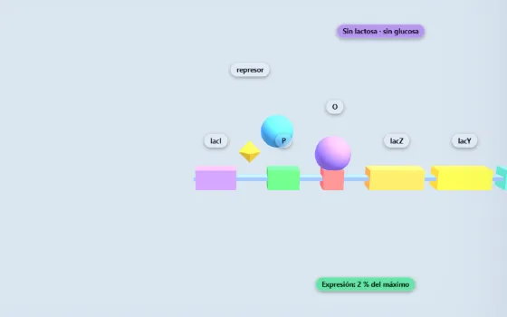
Operón lac y regulación génica
Regulación del operón lac de E. coli: represor LacI, operador, promotor y genes lacZYA, efecto de la lactosa (alolactosa) y de la glucosa (AMPc–CAP), nivel de expresión de β-galactosidasa y mutantes lacI⁻ y lacOᶜ en 3D.
Fisiología y señalización

Potencial de membrana y potencial de acción
Ecuación de Nernst y de Goldman para K⁺ y Na⁺, potencial de reposo, modelo tipo Hodgkin–Huxley con estímulo ajustable, umbral, periodo refractario y bloqueadores (TTX, TEA), con un axón 3D donde los canales se abren y el impulso se propaga.

Señalización celular: receptor → segundo mensajero
Cascada de un receptor acoplado a proteína G: ligando, ocupación del receptor, proteína G, adenilil ciclasa, AMPc, PKA y fosfodiesterasa, con amplificación, curvas dosis–respuesta (Hill, EC50), agonistas parciales, antagonistas, toxina colérica y comparación con un receptor tirosina quinasa.

Fármacos y receptores
Interacción fármaco–receptor en 3D: ocupación según Kd, agonistas, agonistas parciales y antagonistas, curvas dosis–respuesta (EC₅₀), antagonismo competitivo con desplazamiento de la curva y reglas de Lipinski para la absorción oral.
Ecología, microorganismos y salud
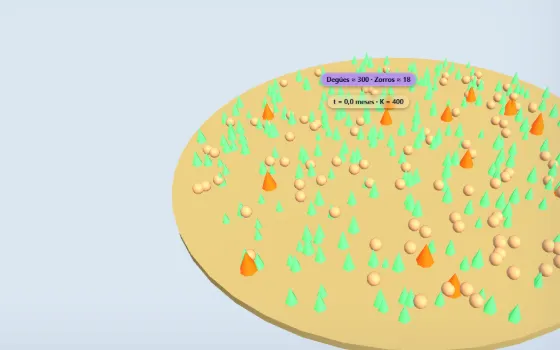
Poblaciones y ecosistemas
Simulador 3D de ecología: niveles de organización, crecimiento exponencial y logístico, capacidad de carga, ciclo depredador–presa (zorro culpeo y degú), competencia con una especie invasora y efectos de la pérdida de hábitat y la caza.

Epidemias, sistema inmune y vacunas
Simulador 3D de epidemias: contagio entre personas con el modelo SIR, número reproductivo R₀ y R efectivo, medidas de prevención, defensas del sistema inmune, vacunas e inmunidad de rebaño.
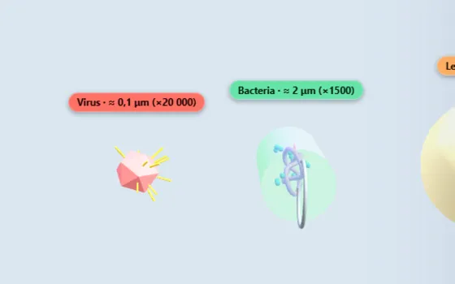
Microorganismos y biotecnología
Simulador 3D de microorganismos: estructura y tamaño de bacterias, levaduras y virus, curva de crecimiento bacteriano, ciclo lítico de un virus, hongos, resistencia a antibióticos y biotecnología: fermentación, yogur y biominería del cobre en Chile.
Técnicas de laboratorio
Técnicas experimentales de separación, preparación, análisis y biología molecular, con el montaje, la teoría y el cálculo asociados.
Separación y purificación

Destilación simple y fraccionada
Montaje 3D de destilación simple y fraccionada de mezclas binarias ideales (ley de Raoult): diagrama temperatura–composición, platos teóricos, composición del destilado y curva de destilación.

Extracción líquido–líquido
Embudo de decantación 3D: coeficiente de reparto, fases según densidad, extracciones múltiples con porciones pequeñas y extracción ácido–base según pH y pKa.
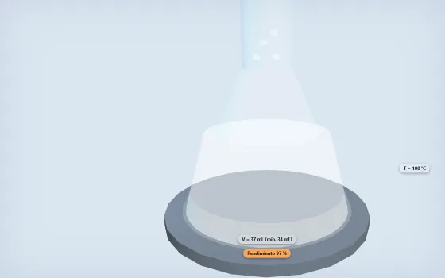
Recristalización
Purificación de sólidos por recristalización: curvas de solubilidad frente a temperatura, volumen mínimo de disolvente caliente, velocidad de enfriamiento, formación de cristales y rendimiento.
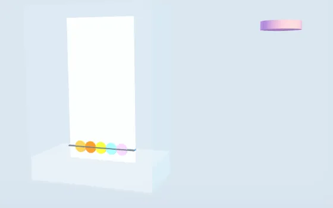
Cromatografía en capa fina y en columna
Placa TLC y columna de sílice en 3D: polaridad de compuestos y eluyente, factor de retención Rf, resolución entre manchas y cromatograma de elución en columna.
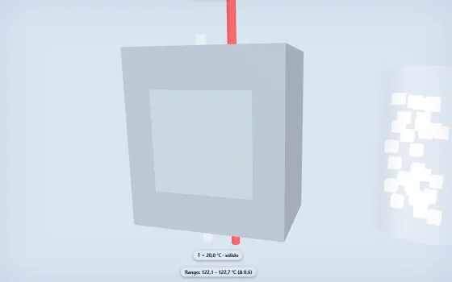
Punto de fusión y pureza
Capilar y aparato de punto de fusión en 3D: rango de fusión, depresión por impurezas (eutéctico), velocidad de calentamiento y punto de fusión mixto para identificar compuestos.
Preparación y síntesis

Disoluciones y diluciones
Concentración molar, porcentual y molal con un matraz aforado 3D, preparación de disoluciones a partir de un sólido, dilución con C₁V₁ = C₂V₂ y mezcla de disoluciones, con partículas de soluto visibles.

Síntesis de la aspirina
Acetilación del ácido salicílico con anhídrido acético: mecanismo paso a paso, reactivo limitante y exceso, rendimiento teórico y porcentual, efecto de la temperatura, el tiempo y el catalizador, y prueba de pureza con FeCl₃.
Análisis cuantitativo
Ácido–base, pH y titulación 3D
Bureta y vaso con indicador: ácidos y bases fuertes, débiles y poliprótico (H₃PO₄), curva de titulación, zona tampón (Henderson–Hasselbalch), distribución de especies, punto de equivalencia y elección del indicador.
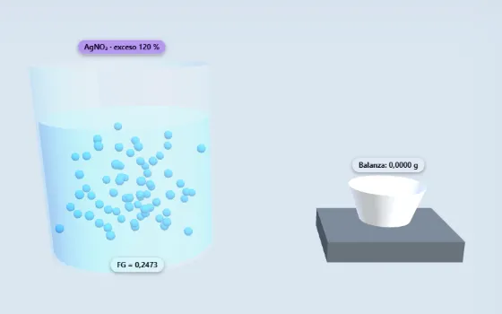
Análisis gravimétrico
Determinación gravimétrica de cloruro, sulfato, hierro y níquel: precipitación con reactivo en exceso, digestión, filtración y calcinación a masa constante, factor gravimétrico y efecto de la coprecipitación y la humedad residual.

Espectrofotometría y ley de Beer–Lambert
Espectrofotómetro UV-Vis en 3D: transmitancia y absorbancia, ley de Beer–Lambert, espectro y λmáx, curva de calibración con regresión lineal y determinación de una muestra desconocida.
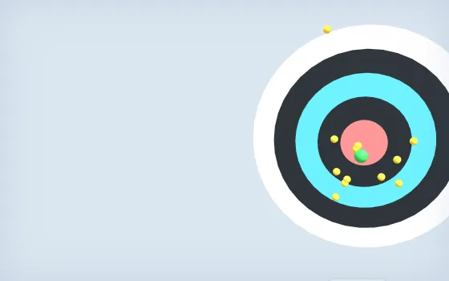
Cifras significativas e incertidumbre
Precisión frente a exactitud con un blanco 3D, error aleatorio y sistemático, instrumentos de laboratorio con su incertidumbre, cifras significativas en sumas y productos y propagación de incertidumbres.
Análisis cualitativo y biología molecular

Ensayo a la llama y transiciones cuánticas
Relaciona el color de la llama de cada elemento con las transiciones electrónicas entre niveles de energía.
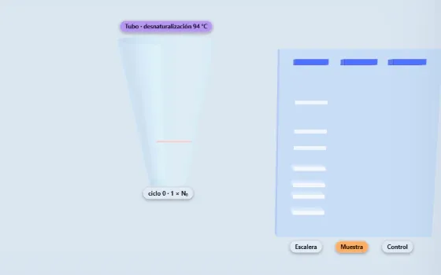
PCR y electroforesis en gel
Termociclador con desnaturalización, hibridación de cebadores y extensión, amplificación exponencial 2ⁿ, efecto de la temperatura de hibridación (Tm) y lectura de bandas en un gel de agarosa con escalera de peso molecular.
Ciencias de la Tierra
Tectónica de placas, sismos y volcanes, rocas y fósiles, y el sistema climático.
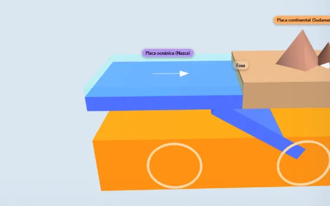
Tectónica de placas y sismos
Simulador 3D de tectónica de placas: bordes convergente (subducción de Nazca bajo Chile), divergente y transformante, convección del manto, ondas sísmicas P y S, sismograma, distancia al epicentro y magnitud.
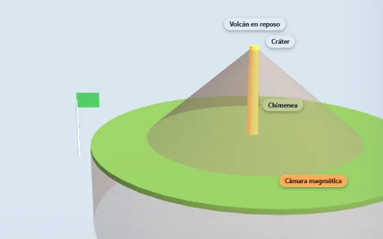
Volcanes y erupciones
Simulador 3D de volcanes: cámara magmática y chimenea, erupciones efusivas y explosivas según la sílice y los gases del magma, ceniza, lahares, alerta técnica y volcanes de Chile, y beneficios como la geotermia.
Rocas, estratos y fósiles
Simulador 3D de geología: rocas ígneas, sedimentarias y metamórficas, ciclo de las rocas, formación de estratos, fosilización, principio de superposición, intrusiones, fósiles guía, levantamiento y erosión.
Clima y cambio climático
Simulador 3D del sistema climático: balance de energía de la Tierra, albedo, efecto invernadero natural, retroalimentaciones del hielo y del vapor de agua, aumento del CO₂ con datos reales y escenarios futuros.
Física
Movimiento, fuerzas y energía; electricidad, ondas y luz; astronomía y cosmología.
Sistema Solar 3D
El Sol, los ocho planetas, Plutón, satélites y cinturones con fichas de cada astro, tamaños a escala, leyes de Kepler, calculadora de peso y desafío.

Cinemática: MRU y MRUA
Simulador 3D de cinemática: posición, desplazamiento, movimiento rectilíneo uniforme y uniformemente acelerado, gráficos x–t y v–t, distancia de frenado y encuentro de dos móviles.

Fuerzas y leyes de Newton
Simulador 3D de fuerzas: peso y gravedad en distintos astros, fuerza elástica y ley de Hooke, roce estático y cinético, y las tres leyes de Newton con diagrama de cuerpo libre.
Energía mecánica, trabajo y potencia
Simulador 3D de energía: trabajo de una fuerza, energía potencial gravitatoria y cinética en una pista, conservación de la energía mecánica, disipación por roce y potencia de una grúa.
Cantidad de movimiento y choques
Simulador 3D de cantidad de movimiento: impulso y fuerza media (airbag), choques elásticos, inelásticos y con coeficiente de restitución, masas distintas y retroceso en un riel de aire.

Electrostática: electrización y fuerza eléctrica
Simulador 3D de electrostática: carga eléctrica, electrización por frotamiento con serie triboeléctrica, por contacto y por inducción en un electroscopio, conexión a tierra y ley de Coulomb.

Circuitos eléctricos en serie y en paralelo
Simulador 3D de circuitos: circuito abierto y cerrado, ley de Ohm, conexión en serie y en paralelo con ampolletas, resistencia equivalente, ampolleta fundida y potencia eléctrica.

Ondas y sonido
Simulador 3D de ondas sonoras: partículas del aire que forman compresiones y enrarecimientos, amplitud e intensidad, frecuencia y tono, rapidez en distintos medios, eco y funcionamiento del oído, con tono audible.

Lentes y el ojo humano
Simulador 3D de óptica: rayos en una lente convergente, imagen real e invertida, lupa, ecuación de la lente delgada, el ojo y la acomodación, miopía e hipermetropía con su lente correctora.

El universo en expansión
Simulador 3D del universo en expansión: corrimiento al rojo de galaxias, ley de Hubble, expansión sin centro, edad del universo, historia desde el Big Bang y astronomía en los observatorios de Chile.
No hay simulaciones que coincidan con la búsqueda.